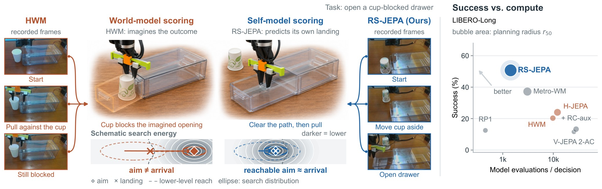
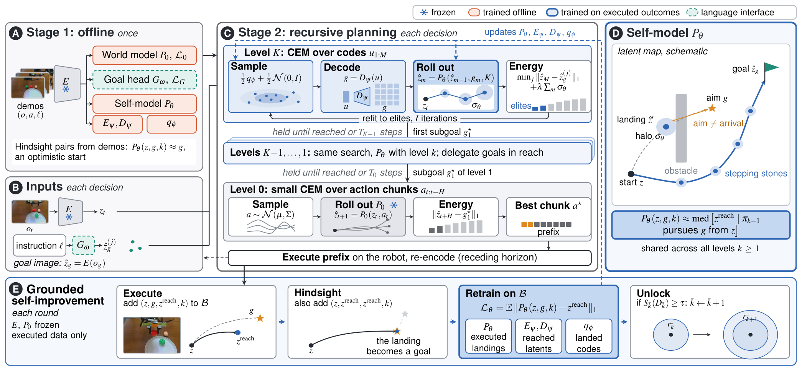
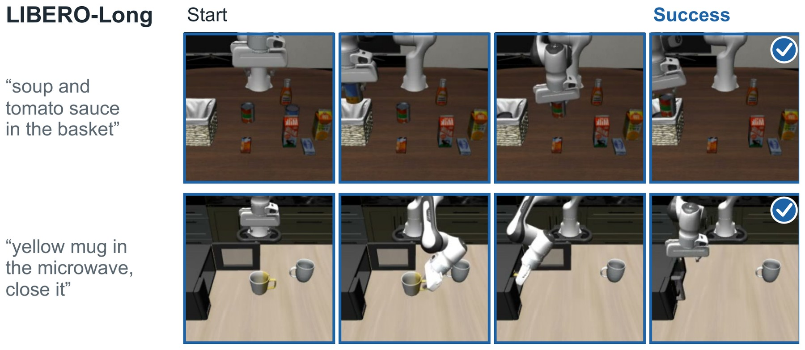
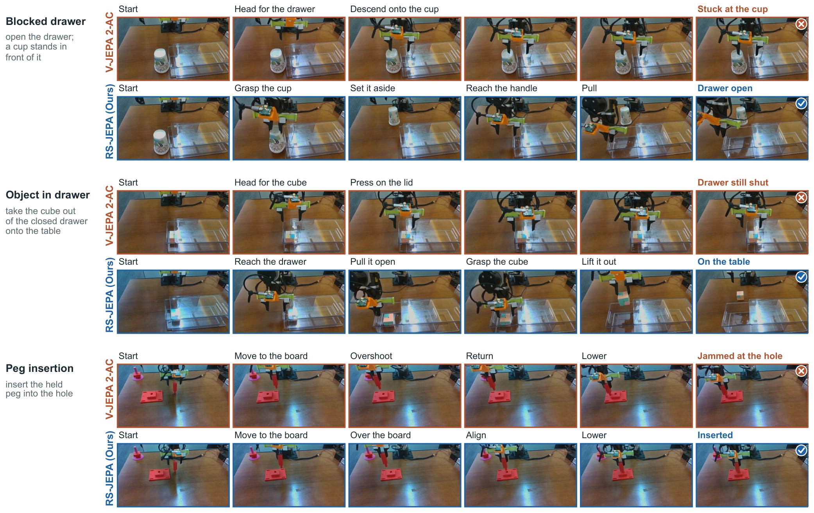
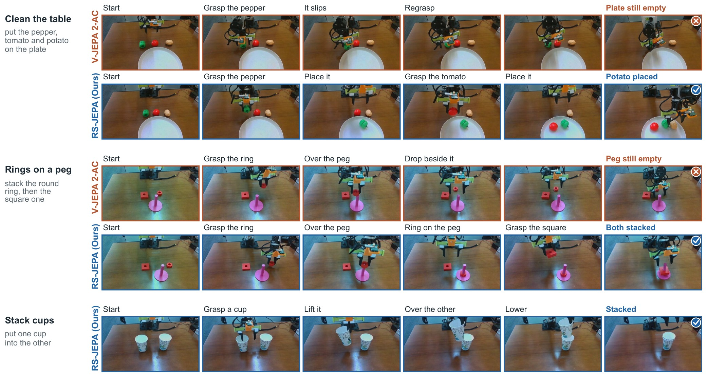

Under review
for Efficient and Long-Horizon JEPA Planning
New York University Abu Dhabi
* equal contribution

Latent world models plan by searching for actions whose imagined outcome approaches a goal, but this signal is reliable only a few steps ahead. Hierarchical planners extend the reach by proposing subgoals with a coarser world model, yet the lower-level planner often cannot reach those subgoals. We argue that the upper level should model where its own lower-level planner lands when pursuing a subgoal, rather than how the world evolves under abstract actions. We call this a self-model, and the resulting recursive planner RS-JEPA.
Since reach can only be measured by execution, the self-improvement loop trains the self-model only on executed pursuits and their hindsight relabels, and the hierarchy improves with use. In an idealized setting with deterministic dynamics, a perfect world model and exact search, we prove that an optimistic self-model collapses a hierarchy of any depth to its flat planner and that a calibrated hierarchy of depth K has the reach of a flat planner whose horizon is exponential in K at compute linear in K. Training on executed outcomes provably reaches a unique fixed point within K rounds, while training on imagined outcomes leaves an optimistic self-model in place. Because each level searches a short subproblem the level below can solve, and a prior learned from past plans warm-starts that search, the planner needs far fewer model evaluations per decision than flat search.
The method applies to any JEPA world model, and we instantiate it on V-JEPA 2-AC and LeWM. Under the language-conditioned protocol for LIBERO and RoboCasa, with about 10,000 self-improvement episodes budgeted per suite, RS-JEPA reaches 50.7% success on LIBERO-Long, with about 44× fewer model evaluations per decision than V-JEPA 2-AC at equal success and 18× fewer at their operating points. Within the same system, a world-model upper level in place of the self-model loses most of the gain. On a real robot, self-improvement also raises success.
Hierarchy is the usual way to plan farther than a latent world model can see: a coarser world model proposes subgoals, and the fine planner pursues them. The upper level then selects subgoals that score well under its model and make poor control targets. RS-JEPA scores an upper-level plan by where the planner below is predicted to land, so the search chooses stepping stones that planner can reach.
What a planner can reach is revealed by running it. Each round executes the current hierarchy, records where every pursuit ended, relabels the landing as a goal in hindsight, and retrains the self-model on those outcomes alone. One self-model is shared across levels, and each level searches a short subproblem that the level below can solve.




@misc{he2026rsjepa,
title = {Recursive Self-Models for Efficient and Long-Horizon JEPA Planning},
author = {He, Zhewen and Hu, Junyi and Liang, Jiazhao and Huang, Haomian and Yuan, Shuaihang and Fang, Yi},
year = {2026},
note = {Preprint}
}